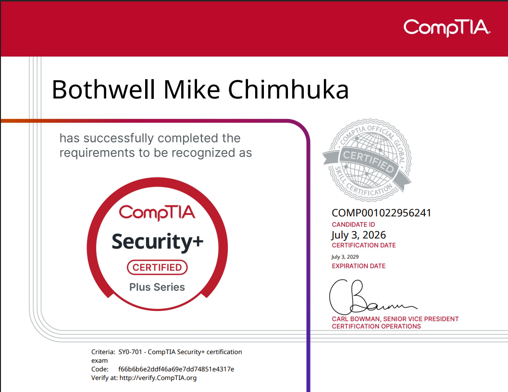
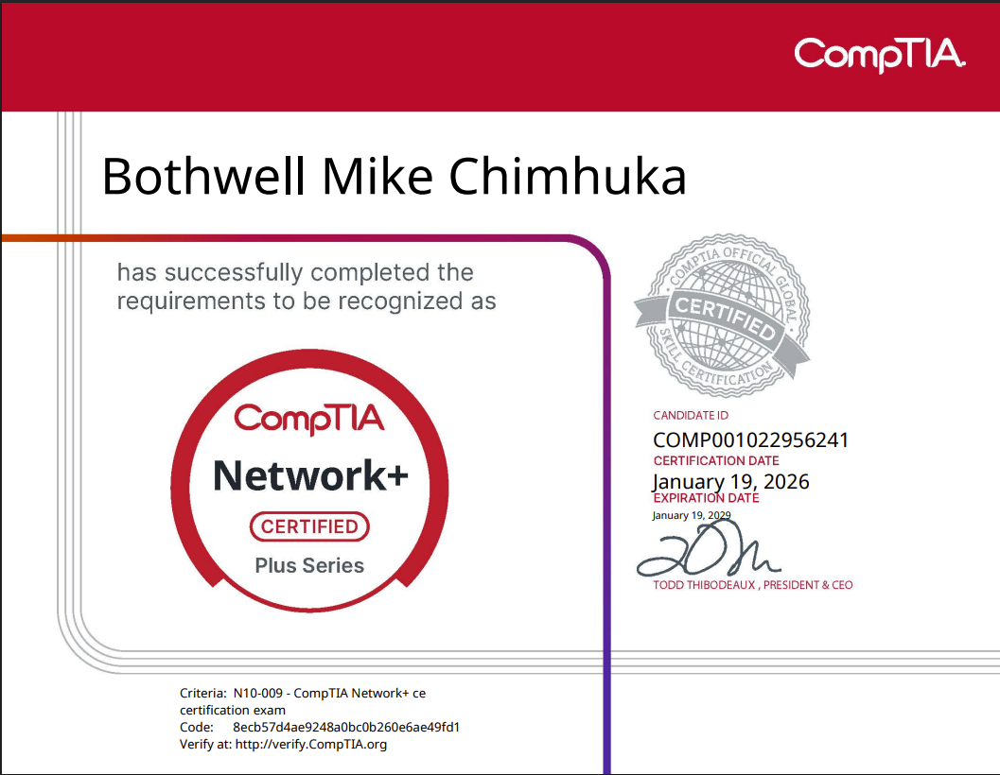
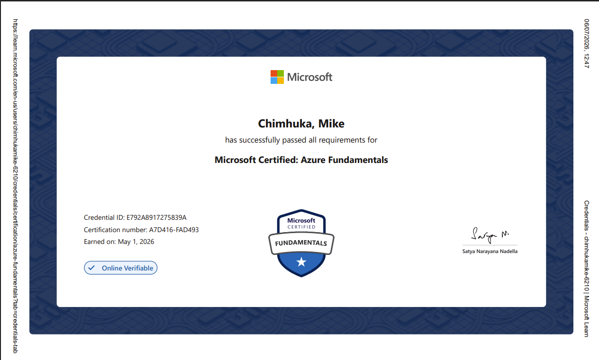
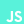

From Zimbabwe
I came to the United States to pursue the American Dream. The journey taught me resilience, humility, and the importance of building a life through purpose instead of shortcuts.
IT Support • Cybersecurity • Networking
I’m Mike Chimhuka—an IT Help Desk Team Lead and cybersecurity professional who combines calm troubleshooting, network fluency, and a security-first mindset to keep people productive and systems resilient.
Open to opportunities

Read my featured story about my journey from Zimbabwe to the United States, pursuing a career in IT, cybersecurity, and professional growth.
Download ArticleMy Story
My story is built on discipline, faith, mentorship, and a willingness to keep learning even when the path is difficult.
I came to the United States to pursue the American Dream. The journey taught me resilience, humility, and the importance of building a life through purpose instead of shortcuts.
I originally considered Civil Engineering because I enjoyed math and physics. Cybersecurity challenged me at first, but learning how computers communicate helped me discover a career path I could grow into.
In August 2025, church, mentorship, and professional guidance helped me mature. I learned the value of reliability, professionalism, preparation, and becoming someone people can depend on.
During winter break, I studied intensely and passed Network+. Later, while taking 16 credits and working part-time, I passed AZ-900 and earned a 4.0 Dean’s List semester.
I earned Security+ on July 3, 2026, began working toward CCNA, and continue building hands-on cybersecurity experience through labs, networking practice, and real-world troubleshooting.
Experience
Lead and mentor 15 IT interns while supporting hardware, software, networking, Windows workstations, user accounts, printers, and ticketing workflows in Zoho Desk.
Support campus operations, events, inventory, faculty needs, and student-facing services while building reliability, organization, and customer service skills.
Recruiter Highlights
Certified in Security+, Network+, and AZ-900 with hands-on practice in networking, systems, cloud, and cybersecurity concepts.
Currently lead and mentor IT interns, helping others grow while strengthening my own support, communication, and documentation skills.
Balanced work, school, certifications, and personal growth while earning a 4.0 Dean’s List semester.
I enjoy solving problems, supporting people, and becoming the kind of teammate others can rely on.
Certifications
Click any available certification card to view the certificate.

Earned July 3, 2026
View Certificate
Earned January 19, 2025
View Certificate
Earned May 1, 2026
View CertificateExpected Graduation: December 2026
Cincinnati State CollegeMachine Learning Foundations
Earned November 9, 2025In Progress
Currently LearningTechnical Skills
TCP/IP, DNS, DHCP, VLANs, VPNs, OSPF, routing, switching, Cisco Packet Tracer, Wireshark
Security+, risk management, authentication, encryption, vulnerability concepts, TryHackMe labs
Windows, Windows Server, Linux, macOS, troubleshooting, user accounts, printers, support workflows
Azure, AZ-900, Microsoft Entra, VirtualBox, VMware, Zoho Desk, Microsoft Office
Python, PowerShell, HTML, CSS, JavaScript, React, Visual Studio, Git, GitHub
Mentoring, training, onboarding, documentation, process improvement, communication
Technology ecosystem
Tools I use to support users, secure systems, build networks, and develop practical solutions.

JavaScriptCurrently Learning
Selected systems & initiatives
Projects where technical execution meets real-world usefulness—from international education access to proactive security operations.
Built a digital platform for a registered nonprofit helping students from Zimbabwe and across Africa access university matching, study-abroad applications, visa guidance, scholarships, and pre-departure support.
Nonprofit • Study Abroad Support • Web PlatformBuilt and deployed a full-stack defensive cybersecurity platform for asset inventory, vulnerability tracking, authorized mock scan scheduling, audit logging, and security posture monitoring.
FastAPI • Next.js • PostgreSQL • RenderA professional website showcasing my story, skills, certifications, career goals, and technical growth.
HTML • CSS • JavaScriptDesigned network configurations using VLANs, OSPF, routing, switching, DHCP, and documentation.
Cisco • Networking • DocumentationHands-on cybersecurity learning through guided labs, concepts, tools, and real-world practice.
Cybersecurity • Linux • Security Tools